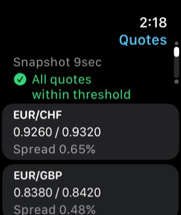

Offline Resilience
Rate tables, history and calculations live on the device. FXDesk opens and calculates in airplane mode.
For cash desks, cashiers and currency traders
FXDesk turns the buy and sell prices on your board into a rate matrix, cross rates and ranked A → B → C → A conversion paths — with every spread, fee and timestamp visible.
It runs entirely on your iPhone, works without internet and never presents a theoretical result as a guaranteed profit.

Every number shows where it came from, how old it is and which side of the quote was used.
Rate tables, history and calculations live on the device. FXDesk opens and calculates in airplane mode.
Evaluates every A → B → C → A cycle in your table, in both directions, and ranks them by estimated net result.
A read-only snapshot of your active desk, quote ages and your last result on Apple Watch.
Large-figure desk mode, monospaced digits and a search-first currency picker.
Enter bid and ask per pair. The matrix shows what one unit converts to in every direction — and “—” where no quote exists.
Selling a base currency uses the bid, buying it uses 1 ÷ ask. Inverse quotes swap sides correctly. Mid rates are never multiplied into a fake profit.
Compare a direct quote with the synthetic cross through a third currency, including both spreads and crossed-market detection.
Add a commission per leg and a fixed fee. Gross and estimated net results are shown side by side, leg by leg.
Separate rate tables per desk or branch. Duplicate, rename, export and import — quotes are never mixed between profiles.
Every completed calculation is stored with the exact quotes, timestamps, rounding and fees it used.
No account, no analytics, no tracking. Your quotes stay on your device unless you export them.
Three calculations free, then a single in-app purchase. No subscription.
Type the buy (bid) and sell (ask) prices from your board, or start from the illustrative example desk.
Pick a start currency and amount, or a specific three-currency cycle.
FXDesk applies the correct quote side to every leg and ranks the cycles your table supports.
Check spreads, fees, cash rounding, quote freshness and the assumptions behind each result.
An indicative or reference rate is not an executable price. FXDesk calculates with the quotes you enter; it cannot know whether a desk will honour them, has the banknotes in stock or applies limits.
Spreads, commissions, rounding to banknotes and the time between legs usually remove small theoretical differences. That is why FXDesk shows gross and estimated net results separately and marks stale, mid-only or example data as theoretical.
FXDesk is a calculator. It does not execute trades or exchanges, does not give financial advice and does not guarantee any profit.
All quotes, profiles, history and calculations are stored on the iPhone and work without a connection. Each quote keeps its observation time and source, and quotes older than your threshold are flagged — never silently treated as current.


The watch app shows a read-only snapshot of the active desk: quotes with spreads, how old the snapshot is, how many quotes are stale and your last calculation. It keeps the last snapshot when the iPhone is out of reach.
Free
$29.99
One-time in-app purchase (US price; local prices are set by the App Store).
One successful triangle or cross-rate result. Invalid input, errors, browsing rates, editing quotes and reopening History never count, and repeating the identical calculation is not counted twice.
Yes. Quotes, profiles, history and all calculations are stored and run on your iPhone. Only the optional ECB reference-rate refresh and the App Store purchase need a connection.
No. FXDesk calculates with the quotes you enter. The optional ECB reference rates are published once per working day, are mid rates for information only and are never used in calculations.
Converting A → B → C → A through three quotes. If the amount you end with is larger than the start amount after spreads, the cycle shows a theoretical difference.
No. A result is only as good as the quotes. Availability, banknote stock, limits, fees and timing at real desks can remove it. FXDesk labels results indicative or theoretical, never executable.
Selling a currency gives you the lower bid, buying costs the higher ask. Each leg pays the spread, so most cycles end slightly below the start amount.
Three completed calculations. Errors and invalid input do not count.
No. It is a one-time, non-consumable in-app purchase that you can restore.
A read-only snapshot of the active desk: quotes and spreads, snapshot age, stale count and the last calculation.
No. It never places trades, exchanges money or connects to brokers or banks.
Your desk profiles and quotes, calculation history and settings, plus the free-calculation counter. Nothing is uploaded; there is no account.